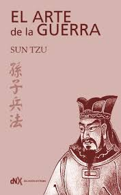
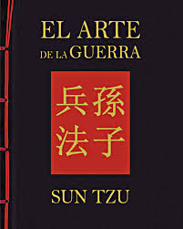
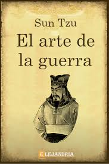
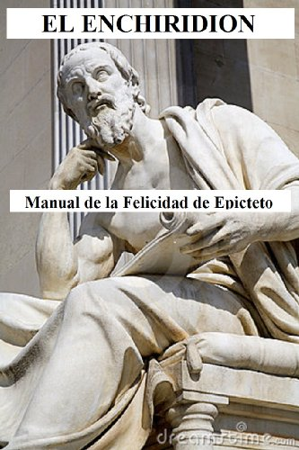
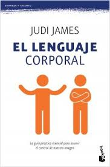

Prefacio: no he leido muchos libros
El arte de la guerra de Sun Tzu



es un libro sobre tácticas y estrategias militares, escrito por Sun Tzu («Maestro Sun», también llamado Sūnzǐ), un famoso estratega militar chino. Se trata de un antiguo tratado militar chino que data del final del periodo de las primaveras y otoños (aproximadamente del siglo v a. C.). La obra consta de 13 capítulos, cada uno dedicado a un aspecto de la guerra y cómo se aplica a la estrategia y tácticas militares. Durante casi 1500 años fue el texto principal de una antología que se formalizaría como los siete clásicos militares del emperador Song Shenzong en 1080. El arte de la guerra sigue siendo el texto de estrategia más influyente en la guerra de Asia Oriental y ha influido en el pensamiento militar oriental y occidental, así como en las tácticas de negocios y en la estrategia legal, entre otros campos.
Este libro contiene una explicación detallada y un análisis del ejército chino, desde las armas y la estrategia hasta el rango y la disciplina. Sun Tzu también subrayó la importancia de los agentes de inteligencia y el espionaje para el esfuerzo bélico. Debido a que Sun Tzu ha sido considerado durante mucho tiempo como uno de los mejores tácticos y analistas militares de la historia, sus enseñanzas y estrategias formaron la base del entrenamiento militar avanzado durante los siguientes siglos.
Enquiridion de Epicteto


El Enchiridion o Manual de Epicteto, es un breve manual de estoico asesoramiento ético elaborado por Arriano , un discípulo del filósofo griego del siglo segundo Epicteto . A pesar de que el contenido se deriva principalmente de los discursos de Epicteto , no es un resumen de los discursos , sino más bien una compilación de preceptos prácticos. Evitando la metafísica , Arriano centra su atención en el trabajo de Epicteto aplicación de la filosofía a la vida diaria. El libro es, pues, un manual para mostrar el camino para alcanzar la libertad mental y la felicidad en todas las circunstancias.
El Enchiridion era muy conocido en el mundo antiguo, y en el período medieval que ha sido especialmente adaptado para su uso en los monasterios de habla griega. En el siglo 15 se tradujo al latín , y luego, con el advenimiento de la imprenta, en varios idiomas europeos. Se llegó a la cima de la popularidad en el siglo 17, en paralelo con el neoestoicismo movimiento.
Cerebro de pan (No lo he leido pero sé que debo)
El doctor Perlmutter explica qué pasa cuando el cerebro encuentra ingredientes comunes tanto en el pan de cada día como en el plato de futas, por qué el cerebro se alimenta de la grasa y del colesterol, y cómo podemos estimular el crecimiento de nuevas neuronas a cualquier edad. También nos ofrece una mirada profunda sobre cómo podemos modificar nuestros genes por medio de elecciones precisas a la hora de comer y de cambios específicos en nuestro estilo de vida, mostrándonos así cómo sanar de aquellos padecimientos a los que más tememos sin necesidad de medicamentos. Con un revolucionario plan de 30 días, Cerebro de pan nos enseña cómo reprogramar nuestro destino genético para gozar de una vida plena.
El lenguaje corporal Judi James
¿Sabías que tu forma de vestir puede hablar de ti? ¿O que tu manera de cruzar los brazos durante tu última entrevista laboral dijo mucho más acerca de ti que tu CV? Todos sabemos que la imagen es una de las habilidades de comunicación más cruciales del ser humano, pero pocos nos hemos detenido a escuchar los mensajes que enviamos a los otros a través de nuestro lenguaje corporal, nuestra ropa y nuestra conducta.
 Este leí